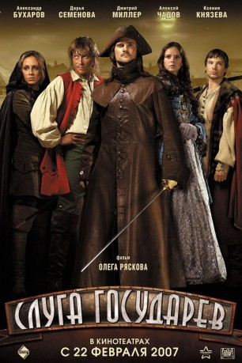

#5652 Pakt der Bestien - The Sovereign's Servant
Alternativ: The Sovereign's Servant (Englischer Titel)
 
 IMDB-Wertung: 6.1 / 10
IMDB-Wertung: 6.1 / 10  Metascore: 0
Metascore: 0 
1709, der Schwedisch-Russische Krieg tobt. Zu dieser Zeit verbannt Louis XIV., König von Frankreich, zwei Männer wegen ihrer Verbrechen. Sie werden verurteilt: Der Eine muss sich dem Schwedenkönig Karl XII. anschließen, der Andere dem russischen Zar Peter dem Großen. Auf dem Weg ins Exil sehen sich beide Männer mannigfaltigen Gefahren gegenüber und das Schicksal hat noch Überraschungen für sie parat. Ihr Leben zu Hause, die Ländereien und Liebschaften in der Heimat gehören der Vergangenheit an, als sie in Poltawa die Grausamkeiten des Krieges kennenlernen …
Jahr: 2007
Dauer: 116 Minuten
FSK:
Land: Russland Studio: MEGA Video-RecordsTonspuren:
Untertitel:
Auflösung: 720p (1280x560) Größe: 4474 MB
Genre: Action, Abenteuer, Krieg, Geschichte
Regisseur: Oleg Ryaskov
Drehbuch: Dennis Law
Soundtrack:
Darsteller:
- Dmitriy Miller als Sharl de Breze
- Alexander Rapoport als 2-y lekar
- Yuliya Mayboroda als Pridvornaya
- Tatyana Rodina als Pridvornaya
- Mariya Gorban als Pridvornaya
- Mariya Kozhevnikova als Pridvornaya
- Georgiy Teslya-Gerasimov als Shlyakhtich
- Aleksandr Bukharov als Grigoriy Voronov
- Kseniya Knyazeva als Sharlotta de Monterras
- Valeriy Malikov als Graf de La Bush
- Darya Semenova als Anka
 Aleksey Chadov als Enzhi
Aleksey Chadov als Enzhi- Nikolay Chindyaykin als Khozyain postoyalogo dvora
- Andrey Sukhov als Pyotr I
- Dmitriy Shilyaev als Lyudovik XIV
- Andrey Ryklin als Aleksandr Menshikov
- Aleksandr Starikov als Lekar Pyotra I
- Eduard Flerov als Karl XII
- Vladislav Demchenko als Prints
- Rodion Yurin als Graf de Gish
- Ivan Shibanov als Markiz fon Shomberg
- Olga Arntgolts als Markiza fon Shomberg
- Elena Plaksina als Praskovya
- Andrey Bolsunov als Adyutant Karla
- Konstantin Vinokurov als Pridvornyy khudozhnik
- Viktoriya Zakharova als Gospozha de Montenon
- Aleksandr Korzhov als Kapitan gvardeytsev
- Mikhail Lebedev als Pazh
- Aleksey Maslov als Episkop
- Dmitriy Mazurov als 1-y sluga
- Aleksandr Sazonov als 2-y sluga
- Yuriy Filatov als Sekretar
- Aleksey Lyukshin als Tseremoniymeyster
- Elena Solovyova als Rol ozvuchivala
- Yuriy Dergach als Rol ozvuchival
- Mikhail Georgio als Rol ozvuchival
- Nikita Semyonov-Prozorovskiy als Rol ozvuchival
- Aleksey Ptitsyn als Rol ozvuchival
- Dmitriy Zhamoyda als Rol ozvuchival
- Dmitriy Dorokhov als Frantsuzskiy gvardeets
- Grigoriy Ivanets als Frantsuzskiy gvardeets
- Ilya Kremnev als Frantsuzskiy gvardeets
- Vladimir Yabchanik als Frantsuzskiy gvardeets
- Karina Dymont als 1-ya gornichnaya
- Anastasiya Pinchuk als 2-ya gornichnaya
- Ann-Domenik Kretta-Toptsova als 3-ya gornichnaya
- Anna Garnova als 4-ya gornichnaya
- Aleksandr Pyatkov als Kucher
- Anastasiya Zaytseva als Chernyy vsadnik
- Lyubov Anisimova als Sluzhanka
Datei: X:\2007(N-Z)\Pakt der Bestien - The Sovereign's Servant (2007, FSK, 1280x560).mkv seit 02.03.2017
Festplatte: HD 2007(A-Z)-2008(A-F)
 Es gibt insgesamt 56 Filme in der Gruppe '2007(N-Z)'
Es gibt insgesamt 56 Filme in der Gruppe '2007(N-Z)'